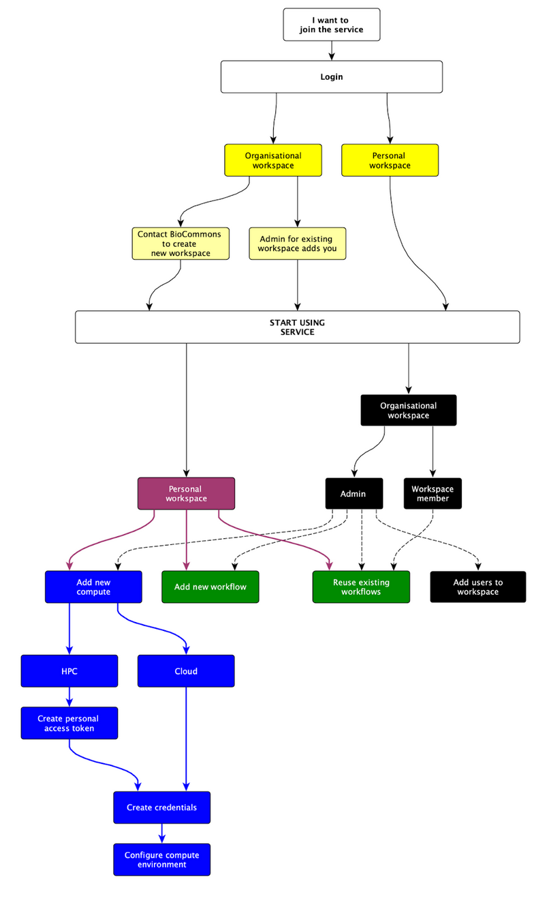
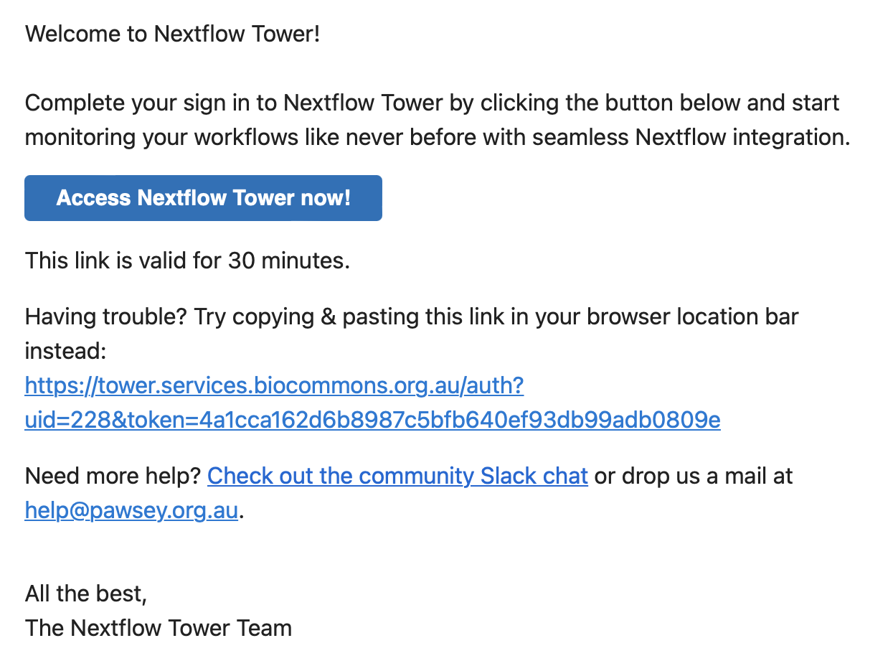
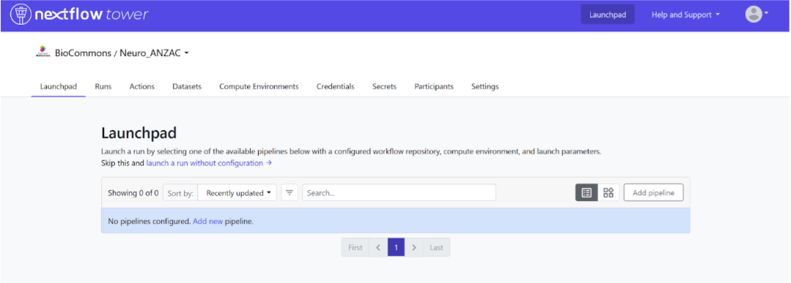

Workspace management and use
Using the service
Any Australian researcher can access the Australian BioCommons Tower Service during the pilot phase and use their own personal workspace. Once you’ve set up your compute access and been added to a Nextflow Tower workspace, you’ll be able to do the following, depending on your assigned role:

Logging into the service
Rather than the more common username and password style login you might be used to, NextFlow Tower uses an authentication link. To login:
Go to https://tower.services.biocommons.org.au.
Provide your University email address. ou will then receive an email with the access link in your email inbox. Click on this link to be logged into Nextflow Tower. Note that it can take a few minutes for the link to hit your inbox.

Using the interface
Upon signing into Tower, you will be greeted with an interface for you as an individual user. To access the full functionality offered by the Australian BioCommons Tower service, you will need to move into (one of) your assigned BioCommons workspaces. To do this:
- Select the dropdown menu by your user name.
- Then select the BioCommons workspace of interest.
Each user has a unique personal workspace to manage resources such as pipelines, compute environments, and credentials. You can also create multiple workspaces within an organisation context and associate each of these workspaces with dedicated teams of users, while providing a fine-grained access control model for each of the teams.
The Tower Dashboard provides an overview of runs in your organisations and personal workspace at a glance. Access it from the user top-right menu, under Dashboard. This is where you will manage your workspaces and workflows. It will open to the launchpad interface.

Above the interface you’ll see the following:
- Launchpad: all your configured pipelines will be available here for running. Run them from here by selecting the ‘Launch’ button for the pipeline of interest.
- Runs: from here you can monitor and inspect the details of all previous workflow executions that you and other users in your workspace have run.
- Actions: you can use Github and Tower webhooks to trigger an automated pipeline test run based on things like pipeline version release.
- Datasets: you can store pipeline input sample sheets here that specify metadata and file paths for each of your datapoints or samples to be processed by a workflow.
- Compute environment: Tower can be used to deploy workflows on various environments, here you will be able to manage and find your preconfigured environments.
- Credentials: here you can store all your authentication keys, credentials required to access private code repositories on GitHub, the Tower agent on HPCs, and external services. These are all encrypted, so they cannot be accessed by anyone else once you’ve stored them.
- Secrets: Ignore for now.
- Participants: here you can see and manage (if you are an admin) the other users in your workspace and define user roles to control access.
- Settings: manage some basic workspace settings (if you are an admin).
Roles and responsibilities
Depending on how you will be using the Tower service, you may be provided with access limitations by the workspace administrator.
- Admins are responsible for workspace curation, managing compute environments, and adding pipelines
- Other members are able to run workflows and won’t have the ability to add or remove compute environments, or pipelines.
USyd users are currently only trialing the Tower service at NCI Gadi and Pawsey Setonix HPCs. As such, all users will need to set up Tower Agent credentials before they can use the Tower service, as this is the only way to access NCI and Pawsey HPC’s with Nextflow Tower.
See the following sections for more details.